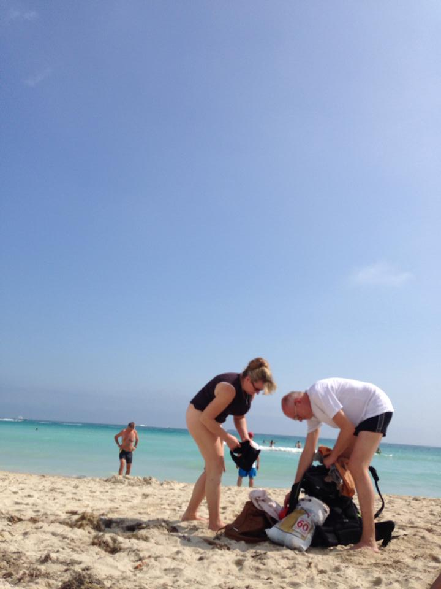
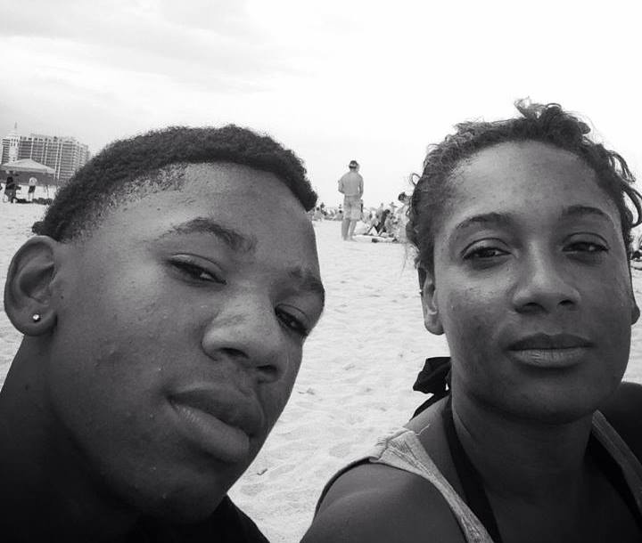
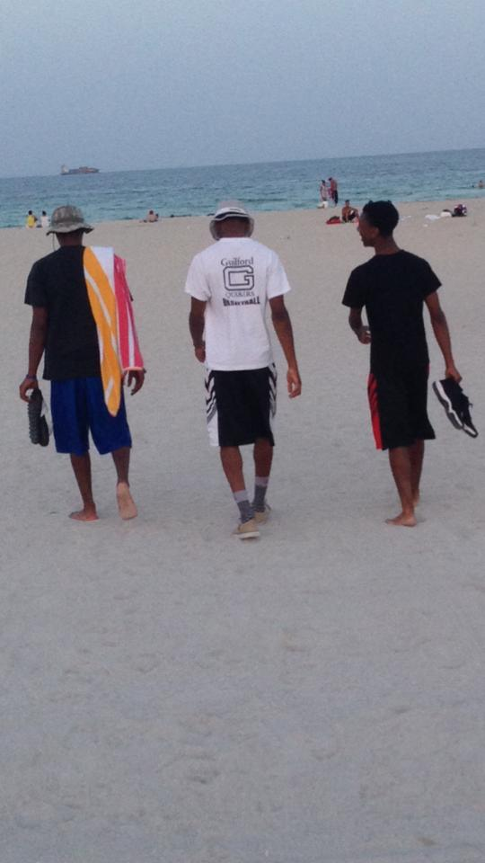
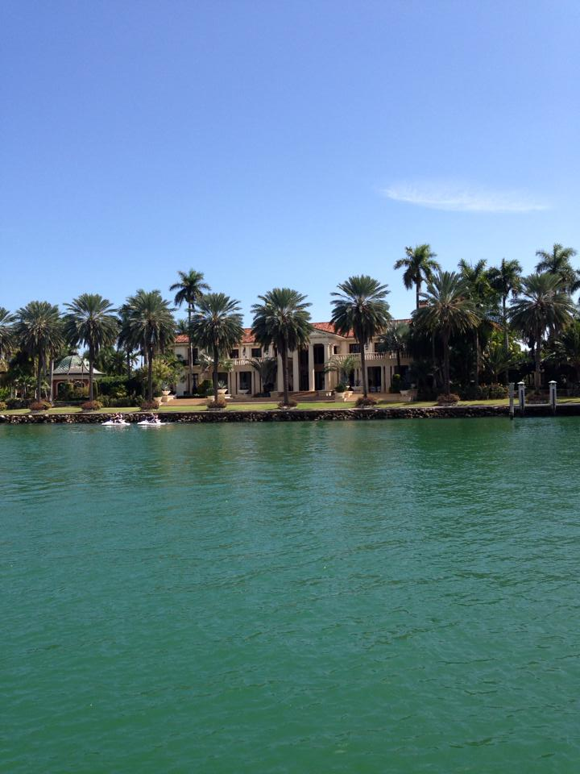
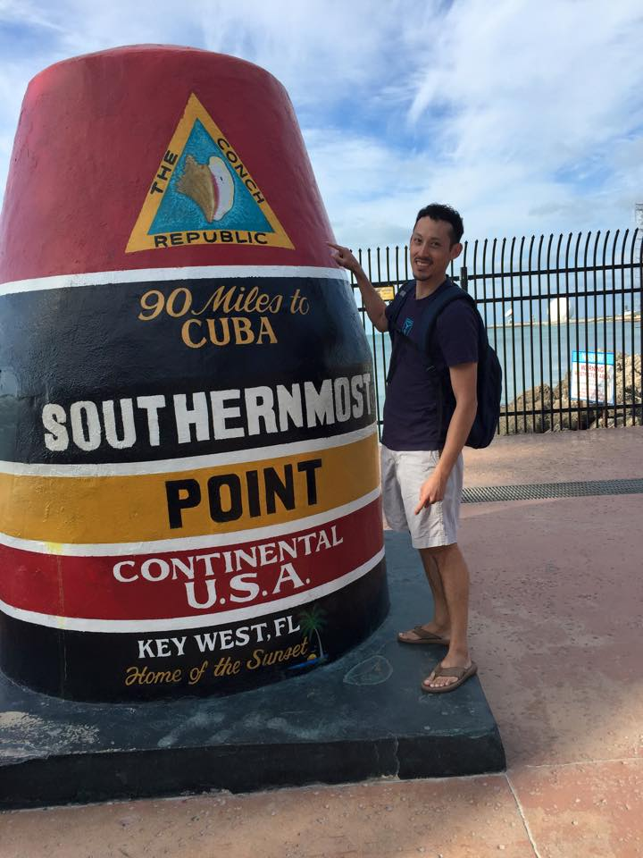
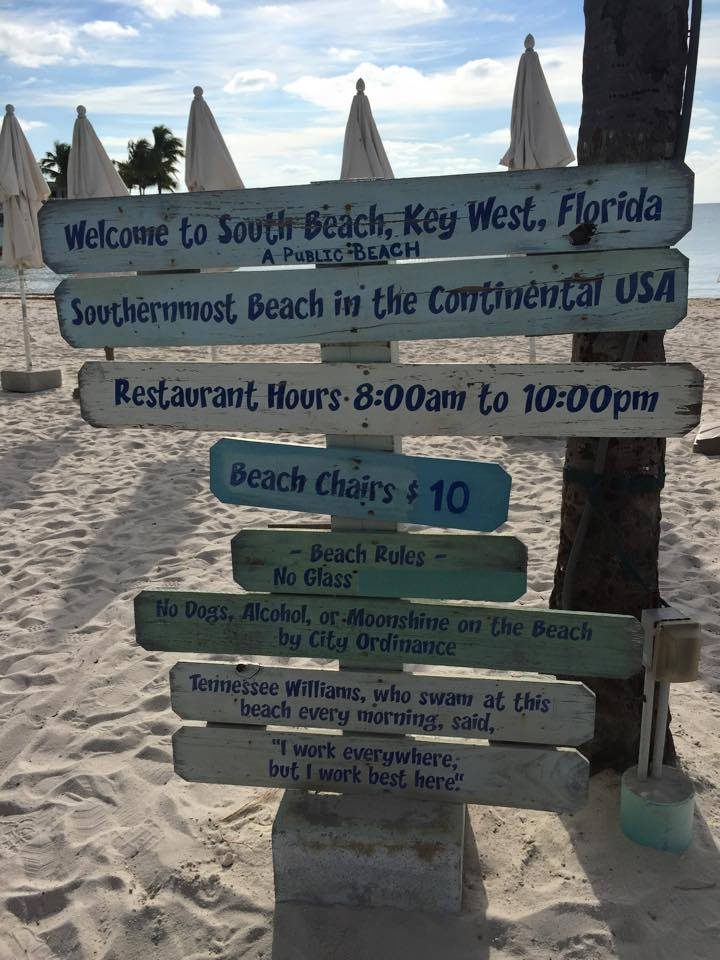

Miami is where everyone goes to play in Florida. Famous for cruises, South Beach, Cubans, beautiful people, and parties – Miami is a wild city. This where you go for fun in the sun. It’s not one of the cheapest American cities but it is definitely one of the most fun. Come here: relax on South Beach; eat amazing food, watch the Miami Heat play basketball, and party in the clubs.
CJ's began long ago. It all started when Grandaddy Gus (Yorktown, VA) came over from Greece in 1921. the first thing he did was invent the now famous "devil crab" (a crab cake which is baked in its original shell). Our crab cakes are the best bar none. Granny Jewel (Savannah, GA) seasoned the shrimp, crabs and fish to perfection and we prepare those dishes just as she did when we were growing up. CJ's presents the same time honored family recipes, with the same care and enthusiasm that has made them irresistible for over 90 years. Come experience what we believe will be the best meal and freshest seafood you have ever had. Our family has set the standard in what fresh seafood should be.
This is the major hotspot in the city. From shopping to partying, this area of Miami Beach is well known for being trendy and full of shops and bars. South Beach can be more expensive than other areas, but it’s worth checking out while you are there. Topless bathing is permitted. It is the quintessential Miami beach experience.
Besides South Beach, some additional waves to check out. Good spots include Virginia South Beach, Haulover Beach (the only legal nude beach), and Bill Baggs Cape Florida State Park.
 It's an absolute must for anyone visiting (or living) in Miami to see the city by water. Having lived here for well over a year, I had never been out on a boat to see this great city until recently. I highly, highly recommend it. When I decided to embark on the 90-minute boat cruise, a tour which would leave from Bayside and circle around Star Island before heading back to port, I had visions of Gilligan's Island. Thankfully for the passengers that day, our destiny was not fated as such. In fact, I'm wondering now how the skipper of the SS Minnow screwed it up so badly. So many questions. Anyway, the tour itself is geared toward highlighting the homes of celebrities (such as Shaquille O'Neal) as well as celebrity landmarks (the sizable mansion where the movie "Scarface" was shot). While that in itself is interesting, even to someone such as me who doesn't follow celebrities all that much, the views granted from the water of downtown Miami, the bay, Fisher Island, South Beach, the port, the islands...they are impressive, to say the least.
The Florida Keys are a coral cay archipelago located off the southern coast of Florida, forming the southernmost portion of the continental United States. They begin at the southeastern coast of the Florida peninsula, about 15 miles (24 km) south of Miami, and extend in a gentle arc south-southwest and then westward to Key West, the westernmost of the inhabited islands, and on to the uninhabited Dry Tortugas. The islands lie along the Florida Straits, dividing the Atlantic Ocean to the east from the Gulf of Mexico to the northwest, and defining one edge of Florida Bay. At the nearest point, the southern part of Key West is just 90 miles (140 km) from Cuba. The Florida Keys are between about 23.5 and 25.5 degrees North latitude. The climate of the Keys is defined as tropical savanna according to Köppen climate classification. More than 95 percent of the land area lies in Monroe County, but a small portion extends northeast into Miami-Dade County, such as Totten Key. The total land area is 137.3 square miles (356 km2). As of the 2000 census the population was 79,535, with an average density of 579.27 per square mile (223.66/km2), although much of the population is concentrated in a few areas of much higher density, such as the city of Key West, which has 32% of the entire population of the Keys. The city of Key West is the county seat of Monroe County. The county consists of a section on the mainland which is almost entirely in Everglades National Park, and the Keys islands from Key Largo to the Dry Tortugas.
 